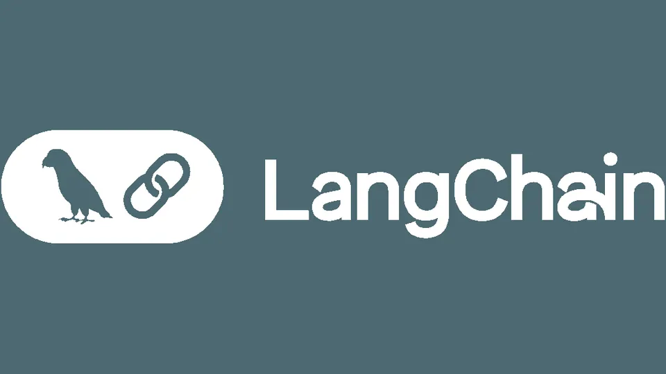
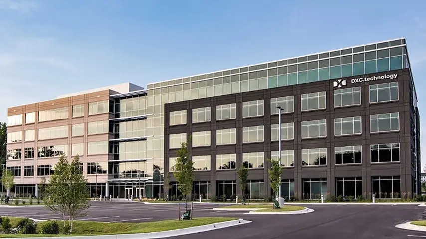

DXC × LangChain: governed AI agents for mission-critical IT, with 95% faster incident resolution
DXC Technology is partnering with LangChain to put governed AI agents to work in mission-critical IT environments, announced on Tuesday. The deal pairs LangChain’s agent framework and tooling with DXC’s OASIS orchestration platform — already in production and scaling toward 125 customer environments across regulated industries and multiple geographies.
- DXC Technology is partnering with LangChain to put governed AI agents to work in mission-critical IT environments; announced Tuesday October 13, 2026.
- The deal pairs LangChain's agent framework and tooling with DXC's OASIS orchestration platform — already in production and scaling toward 125 customer environments across regulated industries and multiple geographies.
- LangChain's open-source LangGraph framework supplies agent orchestration (delegation, state management, human-in-the-loop workflows); DXC is also licensing LangSmith, LangChain's agent engineering platform for development, evaluation, and observability.
- Measured results across more than 500 use cases: OASIS reduced incident resolution time by 95% on average, with diagnostic accuracy of 92% or better validated against senior engineer judgment.
- Production cases: filesystem incidents 53–90 minutes → 3–6 minutes; database performance incidents 2–3 hours → 5–12 minutes; complex problem management 2–6 days → 8–10 minutes.
- Governance model: agents operate within defined authority, assessed on reversibility, impact, verifiability and track record; sensitive actions pause for human approval; every decision, tool call and outcome is traced.
The partnership builds on DXC’s existing use of LangChain’s open-source LangGraph framework inside OASIS, its intelligent orchestration platform for mission-critical IT operations. LangGraph supplies agent orchestration — delegation, state management, and human-in-the-loop workflows — while DXC is also licensing LangSmith, LangChain’s agent engineering platform, for the development, evaluation, and observability of its agents.
The numbers: 95% faster resolution
DXC’s pitch comes with measured results. Across more than 500 measured use cases, OASIS reduced incident resolution time by 95% on average, with diagnostic accuracy of 92% or better validated against senior engineer judgment. Specific production cases: filesystem incidents that used to take 53–90 minutes now resolve in 3–6 minutes; database performance incidents fell from 2–3 hours to 5–12 minutes; complex problem management that took 2–6 days now takes 8–10 minutes.

Governance is the product
The interesting part isn’t the speed — it’s the control structure. OASIS agents operate within defined authority: actions are assessed on reversibility, impact, verifiability, and each agent’s track record. Sensitive actions pause for human approval before execution, and every decision, tool call, and outcome is traced. The enterprise version of “move fast” is “move fast, with a ledger.”
Agents also work from enterprise context rather than general model knowledge: system-specific and customer-specific information, DXC’s operational expertise, and vendor documentation. They respond to operational events, investigate issues in parallel, and draw on specialized capabilities across technology domains — handing control to people when judgment or approval is required.

The open-stack play
The partnership supports an open approach to enterprise agentic AI. OASIS is model-agnostic and interoperable with third-party and customer-owned systems, and deployments can span public cloud, private cloud, dedicated, and sovereign environments. Customers retain control of their data and workflows — a requirement in the regulated industries where DXC’s most valuable customers live.
LangChain COO Julia Schottenstein framed the shift as enterprises taking ownership of their agent stack: adapting the harness to their business, grounding agents in proprietary context, and building the governance and continuous improvement loops that make agents reliable in production.
DXC introduced OASIS earlier this year, and the two companies detailed the approach in a technical white paper, DXC OASIS: The Harness for Mission-Critical IT Operations. The message is clear: in enterprise IT, the winner won’t be the best model — it’ll be the best harness.
Sources: DXC — “DXC and LangChain Advance Agentic AI Harnesses for Mission-Critical IT Operations” (October 13, 2026); PRNewswire; Unite.ai — “DXC Technology Partners with LangChain to Scale Governed AI Agents”.
Frequently asked questions
What is OASIS?
DXC's intelligent orchestration platform for mission-critical IT operations — already in production and scaling toward 125 customer environments across regulated industries and multiple geographies. The LangChain partnership builds on DXC's existing use of LangGraph inside OASIS for agent orchestration.
What are the measured results?
Across more than 500 measured use cases, OASIS reduced incident resolution time by 95% on average, with diagnostic accuracy of 92% or better validated against senior engineer judgment. Specific cases: filesystem incidents fell from 53–90 minutes to 3–6 minutes; database incidents from 2–3 hours to 5–12 minutes; complex problem management from 2–6 days to 8–10 minutes.
How does the partnership handle governance?
Governance is the product, per the article: OASIS agents operate within defined authority — actions assessed on reversibility, impact, verifiability, and each agent's track record — sensitive actions pause for human approval before execution, and every decision, tool call, and outcome is traced.